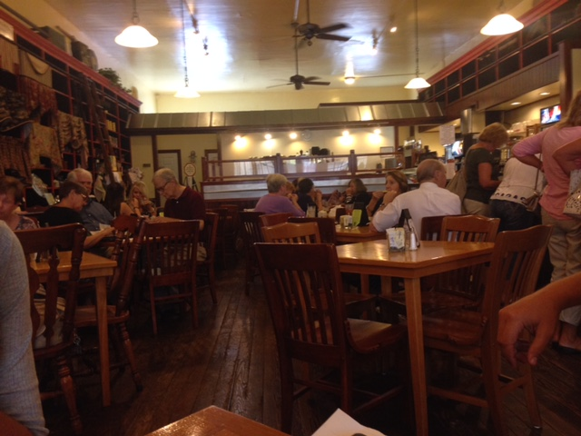
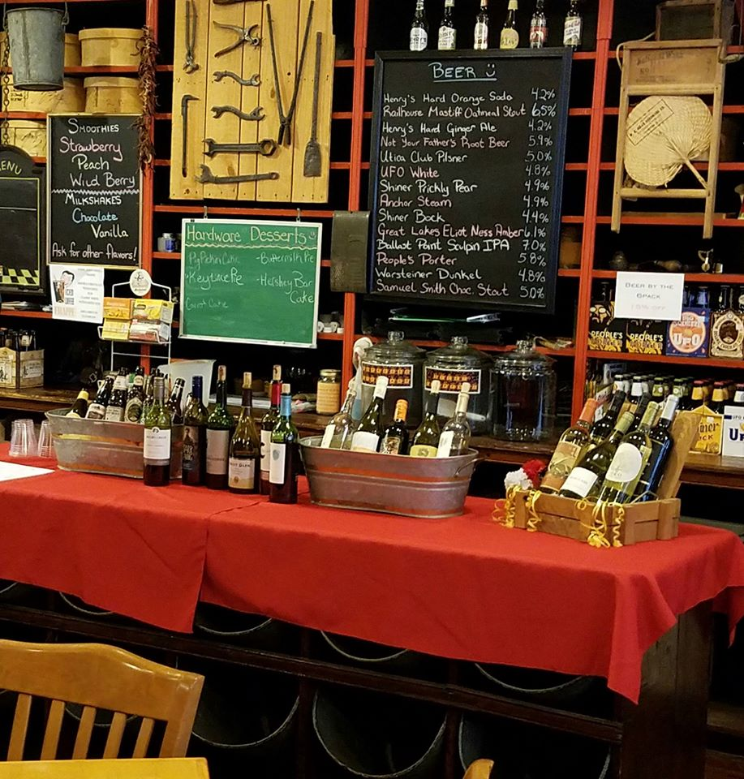

Tool-chest sandwiches
The Hammer, Lure, Cowbell, and Rod & Reel — gourmet builds on freshly baked bread.
Warrenton · 4.7★ from 240+ Google reviews
Hardware Café serves gourmet sandwiches, homemade desserts, and Lake Gaston coffee inside a restored 1907 hardware store at 106 S Main. After a referral, folks mostly hit Maps, Facebook, or a bare Toast order shell — there's no clean modern home for menu, hours, and story.
Why this sample
I rebuilt a clean preview with your real café photos, phone, Facebook, and Toast order link. No invented buttons — just a site that feels as warm as the Hammer Reuben and the historic shelves.
Crowd favorites
The Hammer, Lure, Cowbell, and Rod & Reel — gourmet builds on freshly baked bread.

Rotating lunch and Friday dinner specials — pesto chicken, prime rib nights, and more.

Pie and cake by the slice — the reason regulars always leave room.





Preview is free to look at. Live handoff on your own domain is a flat $550.